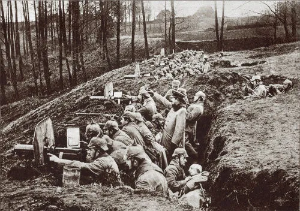

Conexto historico/Introduçao
O imperalismo esta Ascendendo na alemanaha e o nascionalismo
o mundo estava na bela epoque e havia
varios avanços tecnologicos
A guerra aconteceu de fato quando o arquiduque Francisco Ferdinando foi assasinado." Em 29 de julho, a Áustria declarou guerra à Sérvia; no dia 30, russos (em defesa da Sérvia), alemães e austríacos mobilizaram seus exércitos. Em 1º de agosto, a Alemanha declarou guerra à Rússia e, no dia 3, à França. No dia 4, o Reino Unido declarou guerra à Alemanha. Era o começo da Primeira Guerra Mundial."
Primeira fase
"A primeira fase ocorreu de agosto a novembro de 1914 e ficou conhecida como a guerra de movimento, quando a Alemanha realizou ataques agressivos contra a França. Os alemães invadiram a Bélgica, derrotaram os franceses e caminharam rumo a Paris. Logo de imediato, a capital e o governo francês foram transferidos para a cidade de Bordeaux, e os franceses conseguiram conter os ataques dos alemães, que recuaram a ofensiva em setembro de 1914."
